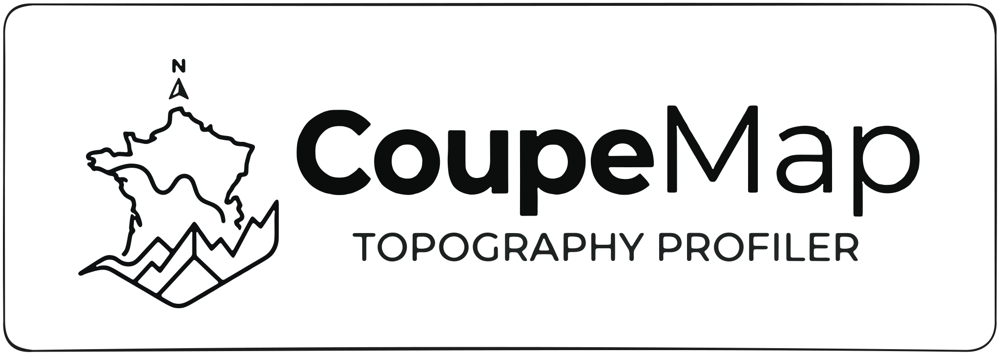

Le profil altimétrique s'affichera ici

1
Tracer la ligne
Aucune ligne dessinée
Options d'import
— OU —
📁
Glisser un fichier profil altimétrique.geojson ici
ou cliquer pour sélectionner
2
Télécharger le profil
Paramètres API
3
Résultats
—
Distance (m)
—
Alt. min (m)
—
Alt. max (m)
—
Points
—
D+ (m)
—
D- (m)
4
Export